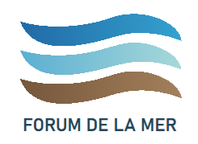
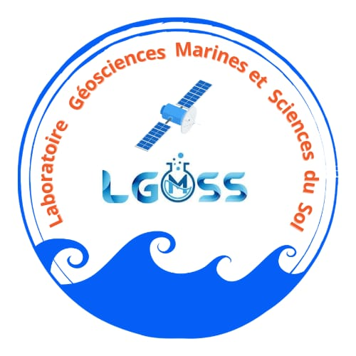
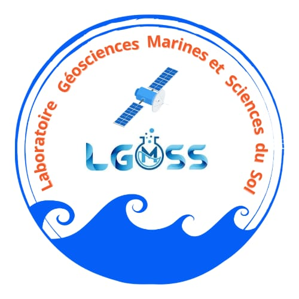
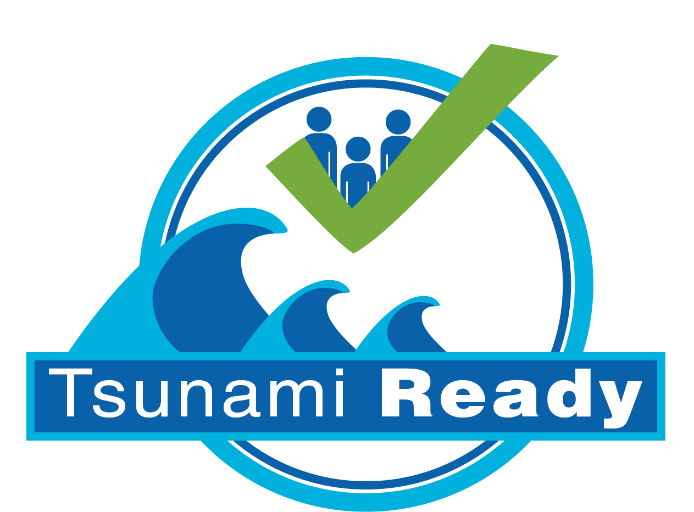
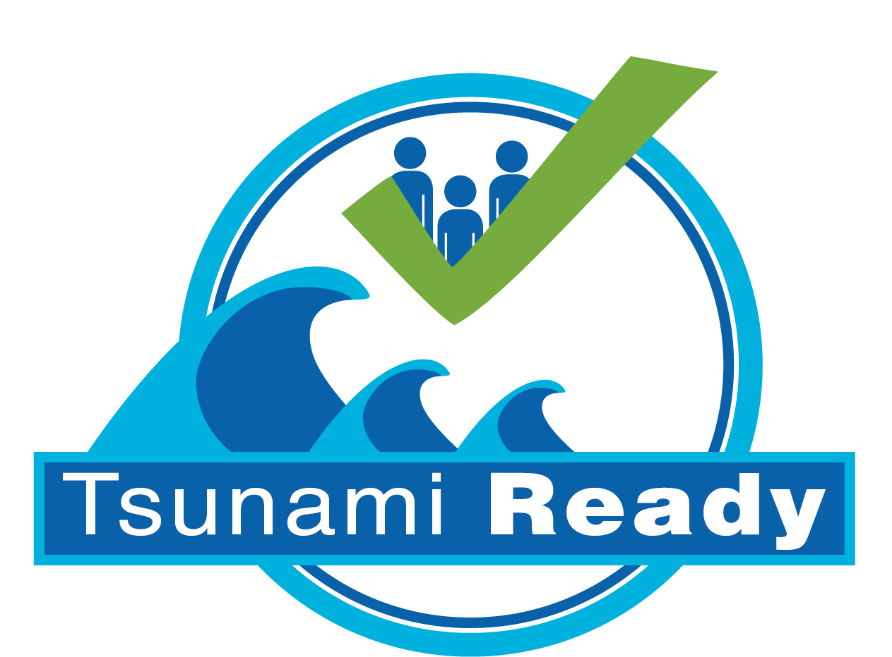
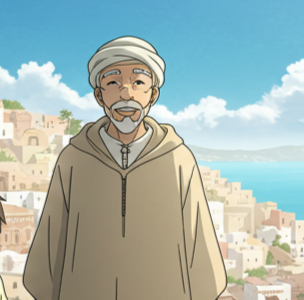

Un outil de sensibilisation essentiel pour les enfants d'El Jadida
Mhaidrat Abdelhakim & Pr. Elkhalidi Khalid
Lauréat Concours SeaLab – Forum de la Mer 2025
.png) 

.jpg) 

.png)
L'Animation : Un Levier Pédagogique Puissant
- Impact Visuel Fort : Captiver l'attention des jeunes esprits avec des personnages attachants comme Youssef et son Oncle Ahmed, et une narration immersive.
- Clarté et Simplicité : Rendre accessibles des informations complexes et potentiellement anxiogènes grâce à un langage visuel adapté et rassurant.
- Mémorisation Facilitée : Ancrer durablement les consignes de sécurité par la force de l'image, du son et de l'émotion positive.
- Ancrage Culturel Authentique : Utilisation de l'Arabe et de références locales pour une résonance et une identification immédiates et profondes.
.png)
Youssef

Oncle Ahmed
Un Écosystème Collaboratif pour un Impact Maximal
Conçu et réalisé par Mhaidrat Abdelhakim et Pr. Elkhalidi Khalid, ce projet bénéficie du soutien scientifique et institutionnel de l'Université Chouaib Doukkali (Laboratoire LGESS), garantissant sa rigueur et sa pertinence.
Notre action est en parfaite synergie avec les programmes internationaux de l'UNESCO-IOC : le projet CoastWAVE et l'initiative Tsunami Ready, visant à faire d'El Jadida une communauté exemplaire en matière de résilience côtière.
Notre Engagement Commun
Unir nos forces pour la sécurité de tous.
Une collaboration fondée sur l'expertise scientifique, la connaissance du terrain et une passion partagée pour un impact durable sur la sécurité de notre communauté.
Vers un Avenir Plus Sûr : Ensemble, Soyons "Tsunami Ready" !
Notre Vision d'Avenir
Construire une résilience collective durable...
Une communauté d'El Jadida pleinement informée et préparée, où chaque enfant devient un ambassadeur actif de la sécurité, partageant ses connaissances vitales avec sa famille et ses amis.
Cette vidéo est bien plus qu'un simple outil pédagogique ; c'est une invitation à l'action collective et un investissement dans l'avenir. Nous sommes convaincus qu'elle armera les enfants d'El Jadida des connaissances et de la confiance nécessaires pour devenir les véritables "héros de la sécurité" de demain.
Prochaines étapes cruciales : Assurer une large diffusion dans les écoles, les associations et les centres pour enfants, et explorer la création de supports pédagogiques complémentaires (jeux, livrets) pour renforcer l'apprentissage.

Choukran Jazilan ! Merci pour Votre Attention.
Nous tenons à exprimer notre profonde gratitude au Forum de la Mer et aux organisateurs du concours SeaLab pour cette formidable reconnaissance et cette opportunité unique.
Un grand merci également à nos partenaires, à l'Université Chouaib Doukkali, au laboratoire LGESS, et à tous ceux qui ont cru en ce projet et l'ont soutenu avec passion.
Nous sommes maintenant à votre entière disposition pour répondre à vos questions et échanger sur ce projet qui nous tient à cœur.